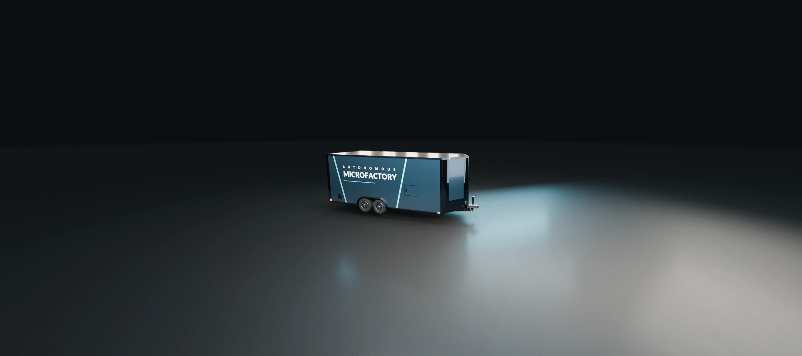
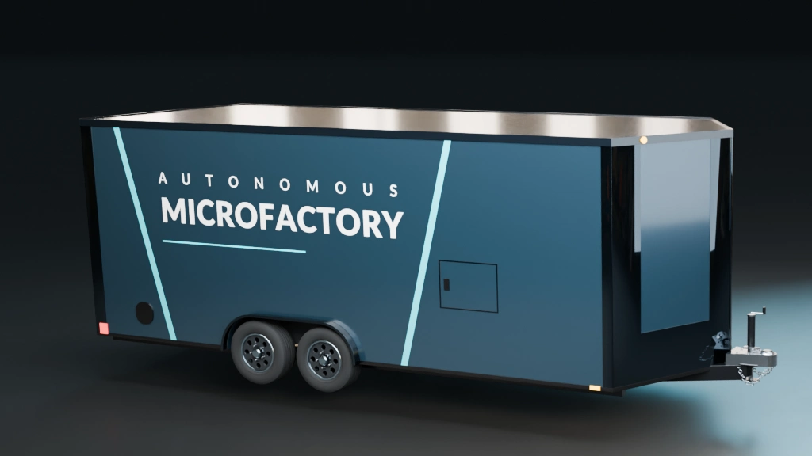
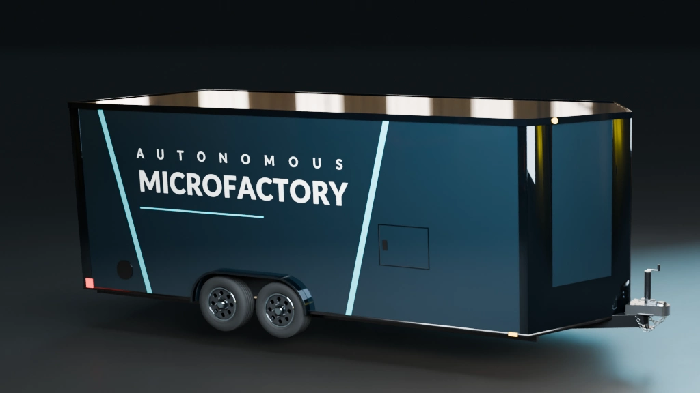

THE SAME ARRIVAL. A CLOSER LOOK.
Refining the finish.
Two lighting and surface treatments on the actual Blender trailer. The main website hasn’t changed.

THE AUTONOMOUS MICROFACTORY TRAILER
Your next trailer.
A factory inside.
More than a place for your mowers and equipment. Your trailer turns grass, leaves, and food waste into products, creating a new source of income for your business with every product it produces.
THE DETAILS THAT MAKE THE DIFFERENCE
Look closer.
Small manufactured edge radii, corrected panel shading, and broad softbox reflections across the graphite paint.


What stays. Trailer dimensions, door placement, wheels, hitch, approved lettering, truck movement, intro camera and background.
What this tests. Rounded edge highlights, flatter panel shading, clear coat and controlled reflections. The motion samples are short 15 fps drafts; final resolution and animation come after choosing the look.